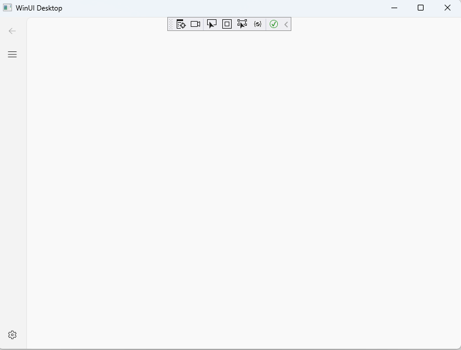
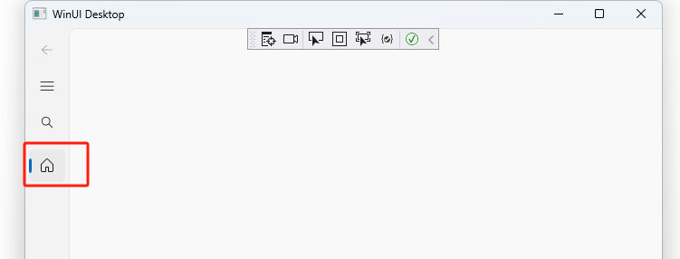

窗口
微软的文档
属于Microsoft.UI.Xaml命名空间
[Microsoft.UI.Xaml.Markup.ContentProperty(Name="Content")]
[Windows.Foundation.Metadata.ContractVersion(typeof(Microsoft.UI.Xaml.WinUIContract), 65536)]
[Windows.Foundation.Metadata.MarshalingBehavior(Windows.Foundation.Metadata.MarshalingType.Agile)]
[Windows.Foundation.Metadata.Threading(Windows.Foundation.Metadata.ThreadingModel.Both)]
public class Window
勾八微软什么东西都没说呀, 怎么用呢?
var window = new Window();
window.Content = new TextBlock() { Text = "Hello" };
window.Activate();
给窗口内容糊一个导航栏
首先先建立一个Page作为窗口的内容。
Page
微软的文档中说 Page主要是搭配着Frame Control来使用(导航)。
这样子可以建立一个简单的Page:
<Page
x:Class="fdesk.BlankPage1"
...>
<Grid>
<Button>hello world!</Button>
</Grid>
</Page>
嵌入到窗口中:
protected override void OnLaunched(Microsoft.UI.Xaml.LaunchActivatedEventArgs args) {
m_window = new MainWindow();
m_window.Content = new BlankPage1();
m_window.Activate();
}
嘿嘿，还是挺简单的。
NavigationView
微软的文档说NavigationView就是个容器, 有header、menu pane等东西。
改一下刚才的Page内容如下:
<Page
x:Class="fdesk.BlankPage1"
...>
<NavigationView>
</NavigationView>
</Page>
是一个空白的NavigationView 
NavigationView的属性巨多，不能一一介绍，用到一个摘记一个吧。
我们来看看这个View上面有哪些item。
AutoSuggestBox
<NavigationView.AutoSuggestBox>
<AutoSuggestBox
x:Name="controlsSearchBox"
MinWidth="100"
VerticalAlignment="Center"
x:FieldModifier="public"
KeyboardAcceleratorPlacementMode="Hidden"
PlaceholderText="Search"
QueryIcon="Find"
QuerySubmitted="OnControlsSearchBoxQuerySubmitted"
TextChanged="OnControlsSearchBoxTextChanged">
<AutoSuggestBox.KeyboardAccelerators>
<KeyboardAccelerator
Key="F"
Invoked="CtrlF_Invoked"
Modifiers="Control" />
</AutoSuggestBox.KeyboardAccelerators>
</AutoSuggestBox>
</NavigationView.AutoSuggestBox>
看看就好了, 好像用处不大。
NavigationViewItem
微软的文档说这个就是导航栏的菜单中具体的item。
比如，我们在导航栏中添加一个Home:
<NavigationView.MenuItems>
<NavigationViewItem x:Name="Home" AutomationProperties.AutomationId="Home" Content="Home" Icon="Home"/>
</NavigationView.MenuItems>

嘿嘿，还挺好看的。
NavigationView.SelectionChanged
微软的文档说, 当Item改变时(点击了一个item)这个回调就是被调用。